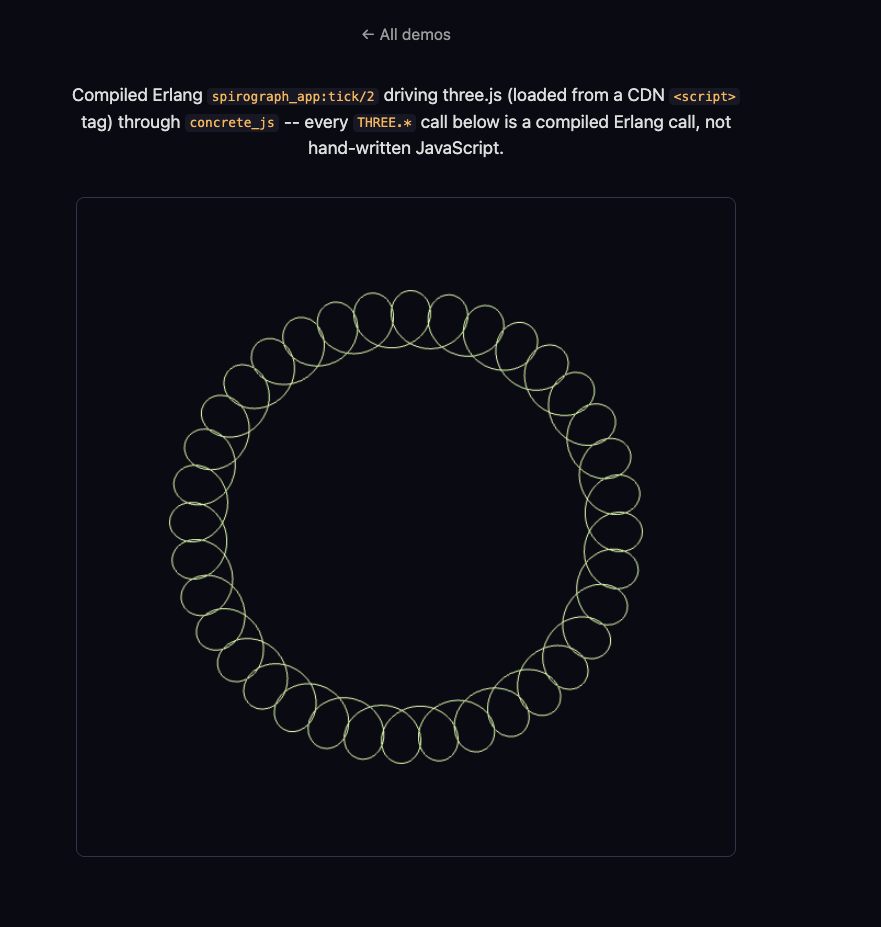

CONCRETE 005: JavaScript Interop.
Summary:
Every demo so far talks to the browser through a fixed set of hand-written BIFs: dom:*, canvas:*, sse:*, http:*. Each BIF wraps one native call. canvas:arc/6 wraps CanvasRenderingContext2D.arc. This does not work for a real JavaScript library. This post covers concrete_js, a new module that calls into any code already loaded in the page. That code can come from three.js, from Chart.js, or from any other library loaded with a plain <script> tag. Concrete does not need to know about the library in advance.
Why This Needs No Compiler Support
I expected this feature to need changes in the transformer and the encoder. It did not need either one. The reason is worth understanding before the module itself.
concrete_encoder compiles every remote call the same way, no matter which module the call names:
encode_ir(#ir_remote_call{module = #ir_atom{value = M}, function = #ir_atom{value = F},
arity = A, args = Args}) ->
...
io_lib:format("Erlang[~s](~s)",
[encode_string(io_lib:format("~s:~s/~w", [M, F, A])),
join([encode_ir(Arg) || Arg <- Args], ", ")])
dom:append_html(Id, Html) and concrete_js:call(Receiver, Method, Args) compile to the same shape: a string lookup into a flat JavaScript object, Erlang["dom:append_html/2"] or Erlang["concrete_js:call/3"]. There is no Erlang module named dom. The encoder does not need one named concrete_js either. It only needs the runtime's Erlang table to hold an entry with that exact key.
The call graph already treats a module with no BEAM abstract code as a dead end, not an error. A lookup into the PLT for concrete_js:call/3 returns not_found. The walker adds the vertex, finds no further edges, and moves on. concrete_encoder:encode_bundle/2 then skips encoding anything with no matching PLT entry. concrete_js:* calls get the same free ride dom:* and canvas:* already get. The only real module is concrete_js.erl itself. Its only job is to exist, so the functions have something to type-check against, and something safe to run if they ever run on the server. More on that below.
The concrete_js Module
concrete_js exports seven functions: call/2, call/3, new/2, get/2, set/3, delete/2, instanceof/2, and typeof/1. A small three.js scene, built up piece by piece, uses most of them:
Scene = concrete_js:new('THREE.Scene', []),
Geo = concrete_js:new('THREE.BoxGeometry', [1, 1, 1]),
Mat = concrete_js:new('THREE.MeshBasicMaterial', [#{color => 16711680}]),
Mesh = concrete_js:new('THREE.Mesh', [Geo, Mat]),
concrete_js:call(Scene, add, [Mesh]).
new/2 constructs a class. It returns a value you can pass into later calls. call/3 calls a method on a value you already have. call/2 does the same thing without a receiver, for a bare global function. get/2, set/3, and delete/2 read, write, and remove a property. instanceof/2 and typeof/1 answer the same questions the matching JavaScript operators answer.
The example above takes more typing than the plain JavaScript it maps to: scene.add(mesh) against concrete_js:call(Scene, add, [Mesh]). I considered shortening the module name to js. I decided against it. Erlang has one flat, global module namespace, shared across every dependency an application pulls in. js is a short, common name. A project is likely to already use it for something of its own. A library should not claim a name that generic for everyone who depends on it. Upstream Hologram made the same choice: the module is Hologram.JS, not bare JS.
The real fix for the typing is project-local, not library-wide. include/concrete_js.hrl defines one macro: -define(js, concrete_js).. Include it, and the same scene reads closer to the JavaScript it calls:
-include_lib("concrete/include/concrete_js.hrl").
Scene = ?js:new('THREE.Scene', []),
?js:call(Scene, add, [Mesh]).
A project opts into that -include_lib on its own. concrete_js does not force it on anyone. The rest of this post keeps using ?js in examples, and the full concrete_js name when it means the module itself.
Reaching a Library Already on the Page
'THREE.Scene' above is not special syntax that Concrete parses. It is an ordinary Erlang atom, quoted because it is not a valid bare atom on its own. A Receiver or ClassPath argument is one of two things. It is a native handle, returned by an earlier new/2, call/2, call/3, or get/2. Or it is a dotted path, resolved against the browser's global scope, one segment at a time, starting from globalThis. That path can be a binary, <<"THREE.Scene">>, or an atom, 'THREE.Scene'. Method and Prop arguments take the same choice. A plain lowercase atom, like add, needs no quoting at all.
Atoms read better for a name that is fixed at compile time. That is the normal case, so the examples in this post use atoms throughout. A binary works just as well. Both term shapes carry the same string, so the runtime does not care which one you send.
There is no import step. concrete_js does not fetch a package, resolve a version, or bundle anything. It assumes THREE is already a global, because a plain <script> tag, pointing at a CDN build of three.js, put it there before your compiled bundle ran. Pulling in an actual JavaScript module as a real dependency, the way Hologram's js_import does upstream, needs an ES-module loader. Concrete's build pipeline does not have one yet. That is future work, not this post.
Handles: Values That Are Not Terms
Scene and Mesh above are not Erlang terms in the normal sense. A THREE.Scene instance cannot become an integer, a binary, or a map. There is nothing to convert it into. The runtime boxes it as an opaque handle instead: a tagged 3-tuple, {js_native, TypeAtom, Ref}. Ref indexes a plain JavaScript Map the runtime keeps, from an integer to the real object. Passing the handle into a later call, ?js:call(Scene, add, [Mesh]), looks the ref up and hands the real THREE.Scene back to the native call, unwrapped.
Primitive values box the way you would expect. Numbers become integers or floats. Strings become bitstrings. Booleans become the true and false atoms every other guard BIF already uses. Arrays become lists. Plain objects become maps with binary keys. The same conversion runs in reverse on the way into a call. A Concrete list argument becomes a real JavaScript array before the native function sees it. It does not arrive as a boxed term with a .data field. A function like one of three.js's own array-taking constructors gets exactly the argument shape it expects.
Handles never cross the wire. Compiled browser code is the only place they get created. concrete_serializer and concrete_deserializer never need to know they exist.
Errors, and Running on the Server by Accident
A native call that throws surfaces as {js_error, Reason}, an ordinary Erlang error. You can catch it with a plain try and catch. This is not a new error shape built for this feature. It is the same tuple the compiled try and catch runtime already raises for any uncaught native exception. Reusing it means you learn one error shape, not two.
concrete_js.erl's seven functions all have real bodies, not just specs. Every body is a harmless stub. call/3 returns undefined. set/3 returns its receiver unchanged. And so on. This matters because an action/3 clause can run on the real BEAM, not only compiled and run in the browser. concrete_ws_handler dispatches an action over a WebSocket message straight to concrete_runtime:dispatch_action/4, which calls the real Erlang function. If that action calls ?js:call(...), the stub keeps the server process from crashing. init/2 never re-runs client-side. Hydration only deserializes the state the server already sent. So this stub protects action/3 specifically. That is the one place browser-only code and real server dispatch can meet.
A Real Demo: A Spirograph in three.js
The Scene and Mesh example earlier in this post is illustrative, not code you can run. example/spirograph_app.erl is real code, compiled through the actual pipeline, running in a real browser. It draws an animated, color-cycling spirograph: a ring of loops traced by three.js, loaded from a CDN <script> tag, entirely through ?js calls.
The shape comes from a hypotrochoid: a small circle rolling inside a fixed one, tracing a point offset from its own center. A real Spirograph toy describes the same shape with gear teeth. A ring with 36 teeth and a wheel with 35 teeth, one tooth apart, draws a ring made of 36 thin overlapping loops around a hollow center, instead of a handful of fat petals. spirograph_app.erl uses that exact ratio.
build_spirograph_line() ->
Points = [?js:new('THREE.Vector3', [X, Y, 0.0]) || {X, Y} <- spirograph_points()],
Geometry = ?js:new('THREE.BufferGeometry', []),
?js:call(Geometry, <<"setFromPoints">>, [Points]),
Material = ?js:new('THREE.LineBasicMaterial', [#{color => 16#9CCCFF}]),
Line = ?js:new('THREE.Line', [Geometry, Material]),
{Line, Material}.
Each point is a real THREE.Vector3, a native handle, built by an ordinary Erlang list comprehension, then handed to setFromPoints as one Concrete list. The list unboxes to a real JavaScript array on the way in. Each handle inside it unboxes back to its own THREE.Vector3. three.js never sees a boxed term.
The loop count and the total sweep agree exactly: the curve closes after ?LOOPS full turns, and ?T_MAX sweeps through precisely that many turns, no more. Every one of the ?POINTS points is a distinct part of the ring, not a second pass over ground already covered.
Each animation frame rotates the whole ring a little further, and shifts its color around the wheel:
tick(World, Angle) ->
#{line := Line, scene := Scene, camera := Camera,
renderer := Renderer, material := Material} = World,
Rotation = ?js:get(Line, <<"rotation">>),
?js:set(Rotation, <<"z">>, Angle),
Color = ?js:get(Material, <<"color">>),
?js:call(Color, <<"setHSL">>, [hue(Angle), 0.8, 0.65]),
?js:call(Renderer, <<"render">>, [Scene, Camera]),
dom:set_timeout(16, spirograph_app, tick, [World, Angle + 0.006]).
Same self-rescheduling shape the canvas flower demo already uses, just driving three.js instead of Canvas2D.
Try It Yourself
Start rebar3 as example shell, call spirograph_demo:serve(), and open http://localhost:8773 in a browser. The ring spins in place and cycles color as it turns:

Every line in that image came from a compiled Erlang call to three.js, not from any JavaScript written by hand.
What Comes Next
This post covered how compiled Erlang reaches an already-loaded JavaScript library, and why that needed almost no changes to the compiler. Two things are still missing. One is pulling in a JavaScript package as a real dependency, instead of assuming it is already global. The other is a client-side re-render loop that stays reactive across a whole layout, not just one page's own mount point.